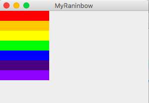
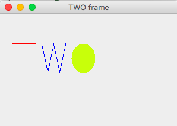
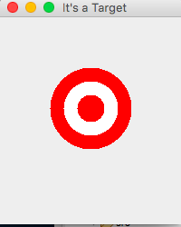

Remember not to create packages. Use the default package
2A
For this problem you are going to draw stripes of colors.
Getting Set Up
Project specification
Complete the StripesComponent class. The application will draw rainbow will starting at (0,0). The colors will be displayed in rectangles. Each rectangle has a width of 150 and a height of 30. There are 7 rectangles. The colors of the first 5 should be made with the pre-defined colors in the Color class. Use red, orange, yellow, green, and blue in that order. The next color is indigo and has RGB values (75, 0, 130). The last rectangle is violet with RGB values of (143, 0, 255). You will need to construct Color objects using those values.
This is what the result will look like:

StripesViewer is provided at the Codecheck URL
2B
Draw the word TWO Using the Line2D.Double and Ellipse2D.Double classes in the Java library, draw the word TWO.
Make a project and create a class called TwoForTheShowComponent to do the drawing. There is no starter file this time. But a TwoForTheShowViewer class is provided.
Your drawing should follow these specifications.
It is a good idea to figure out the coordinates of each letter before starting to draw. Trial and error is not efficient here.
Sample output

As an aside, "TwoForTheShow" is a reference to horse racing. "Two" is second place and is called "showing"
2C
In this application, you will draw a set of concentric circles consisting of three circles. Again use the 2D graphics package classes as explained in your text
Follow these specifications to write a ConcentricComponent class
Sample output

Submitting
After you are satisfied that your code is correct,